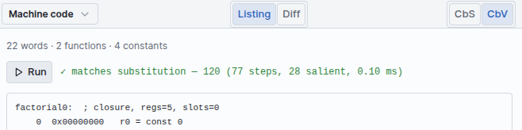
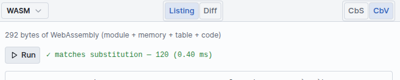

From blocks to WebAssembly
The Lowering tab is a real compiler you can look inside. The same term you assembled from blocks is pushed through nine intermediate representations, each one a live view, and the last two are a WebAssembly module the page can execute.
The nine stages
Open the Inspector and choose Lowering, then pick a stage from the dropdown at the left of the panel toolbar.
| # | Stage | What the pass does | Rendered as |
|---|---|---|---|
| 1 | Core | Desugars the term into a small core IR | listing |
| 2 | ANF | A-normal form: every intermediate result gets a name. This is where the CbS / CbV split is decided. | listing |
| 3 | Closures | Type-preserving closure conversion — free variables become an explicit captured environment | capture cards |
| 4 | First-order | Lambda lifting: nested functions become top-level ones | listing |
| 5 | CFG | A control-flow graph over virtual registers, with explicit control and heap | blocks + SVG edges |
| 6 | Assembly | Instruction selection and linear-scan register allocation | mnemonic listing |
| 7 | Machine code | Fixed-width bytecode for the register VM | hex + mnemonics, with Run |
| 8 | WAT | WebAssembly text format | listing |
| 9 | WASM | The assembled binary module | hex dump, with Run |
Hovering a lowered artifact highlights the source blocks it came from, in both directions — the CFG panel's ↳ block button jumps back to the block that produced an instruction. Every stage carries that provenance, so no matter how far down you go you can always get back to the term you wrote.
Panel controls
Three toggles sit along the Lowering toolbar, and they apply to whichever stage you are viewing:
- ANF | CPS — on the ANF stage, choose A-normal form or continuation-passing style.
- Listing | Diff — show the stage's output, or a diff against the previous stage. Diff is the quickest way to see what a single pass actually changed.
- CbS | CbV — which evaluation strategy the pipeline compiles for. This is not cosmetic: the ANF pass genuinely lowers the two strategies differently.
Core, ANF and CPS
Core is the desugared term. ANF then names every intermediate result, which is the step that turns a nested expression into a sequence of simple operations — the form every later pass assumes.
The CPS variant makes control flow explicit instead, passing an explicit continuation. On Factorial 5, under CbV, it reads:
-- Strategy: value
-- halt: halt0
letrec factorial = λ(n, k0).
(n = 0) ▷ κt0.
if t0 then k0 1
else (n - 1) ▷ κt1. factorial t1 ▷ κt2. (n * t2) ▷ k0
in factorial 5 ▷ halt0Each ▷ κt is “compute this, then bind the result to t and
continue”. The recursive call's continuation κt2 is exactly the
“multiply by n on the way back” that makes factorial non-tail-recursive
— visible here as a continuation that still has work in it.
Closures and lifting
Closure conversion is type-preserving: a function type becomes an existential pairing a code pointer
with a captured environment, written ⟦A→B⟧ = ∃γ. (…) ×
γ. The Closures stage renders this as capture cards — one per
function, listing what it captured and from where.
Lambda lifting then hoists every function to the top level, so the First-order stage has no nested functions left. This is the point at which the program stops looking like λ-calculus and starts looking like something a machine could run.
CFG and SSA
The CFG stage is the most visual of the nine: basic blocks over virtual registers, with real SVG edges between them, labelled by the branch condition.

condbr %3 ? b1 : b2 is the if; callclos is the
recursive call through a closure.Reading the instructions: %n are virtual registers, const loads a literal,
condbr is the conditional branch, loadcode takes a code pointer,
alloc / store build the two-object closure layout, and
callclos calls through it. The heap is explicit from here down.
An SSA verifier runs over the CFG using dominance information and projects φ nodes. It is not a formality: the project's test suite feeds it three deliberately malformed graphs and requires it to reject all three, so the check has teeth.
Assembly and the VM
Instruction selection targets a permanent register ISA, and a linear-scan allocator assigns physical registers — spilling when a function needs more live values than there are registers. Machine code then encodes that into fixed-width words.

The listing pairs each hex word with its mnemonic, so 0x0e020000 reads as
ret r2. Two details worth noticing in Fig. 2: jmpif r2, #13 is a jump to an
absolute instruction index, and the main function ends in
tailcallclos — the VM implements tail calls in constant space, so a tail-recursive
program does not grow the frame stack.
Like the CEK machine, the VM's stepVm is pure, so it too supports exact time travel. It
is the third evaluator in the Lockstep view.
WAT and WASM
The last two stages leave B-Lambda's own machine behind and emit real WebAssembly. WAT is the text format; WASM is the assembled binary.

00 61 73 6d is
\0asm, followed by version 1.The module is not a listing pretending to be a binary. Press Run and the page instantiates and executes it:

So a term you built by dragging blocks has been compiled, in the browser, to a WebAssembly module that the browser then ran — and the result was checked against a substitution semantics defined on those same blocks.
The cross-check
Every one of those green badges is an instance of the same discipline. Each pass has a value-preservation oracle — a small interpreter for that stage's IR, checked against the substitution stepper for every pinned case and every shipped example, under both strategies.
The capstone check is that for every program × strategy, substitution ≡ CEK ≡ bytecode — with the bytecode run through an encode/decode round-trip, so the encoder is checked too. If a lowering pass ever changed the meaning of a program, that check would fail rather than the bug reaching a badge.
Individual passes are checked in their own right as well: that ANF and closure conversion preserve
values, that the CFG interpreter matches substitution, that the SSA verifier rejects malformed
graphs, that register allocation spills correctly under pressure, that syncCount equals
the CEK salient-rule count, and that a step never mutates an earlier snapshot.